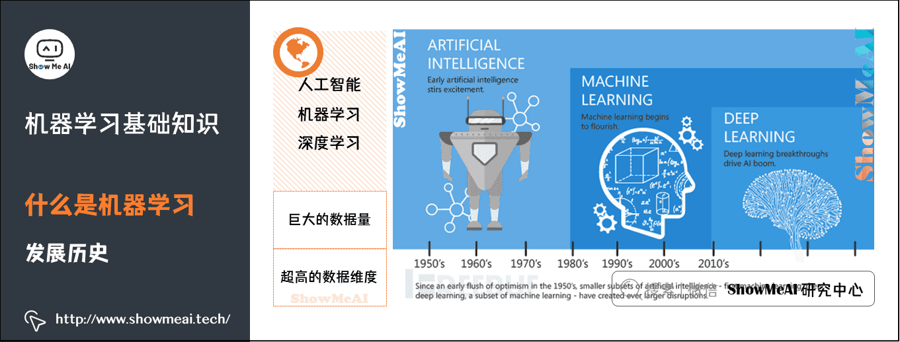
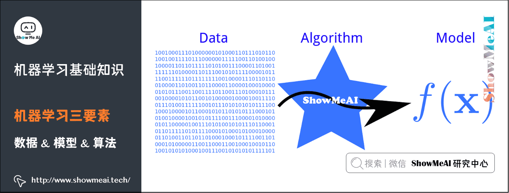
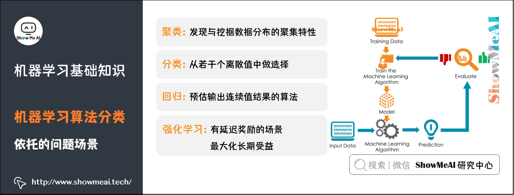

CHAPTER 01
机器学习是什么？
先搞清楚三个「看起来很像」的词——人工智能、机器学习、深度学习。它们不是一回事，而是层层包含的关系。
一句话版：机器学习 = 让计算机自己从数据里「学」出规律，然后拿这个规律去预测新东西。它是人工智能的一个子集，也是实现人工智能最主要的途径。
三个关键词的关系 AI · ML · DL
Artificial Intelligence / Machine Learning / Deep Learning
人工智能（AI）：研究如何让计算机模拟、延伸和扩展人的智能。它是个大筐，目标很多（认图、说话、下棋……）。上世纪 50 年代兴起，但当时数据和硬件都不行，发展很慢。
机器学习（ML）：AI 的一个子集——让计算机从数据中自己学规律。80 年代开始蓬勃发展，诞生了一大批基于数学统计的模型。
深度学习（DL）：机器学习的一个子集，灵感来自人脑，由一层一层的人工神经网络组成。2012 年以后爆炸式增长——这就是你现在听到的 ChatGPT、AI 绘画背后的主力。
记住这个比喻：AI 像「考大学」这个大目标，机器学习是「刷题提分」这个方法，深度学习是「刷题方法里最猛的那套题海战术」。

AI、ML、DL 的诞生时间线（原图来自 ShowMeAI）——一层套一层，越靠内越新、越具体
权威定义：T、E、P Tom Mitchell, 1998
Well-posed Learning Problem (Tom Mitchell, 1998)
计算机程序从经验 E 中学习某个任务 T 和某些绩效测量 P，如果它在 T 上的表现（用 P 衡量）随经验 E 不断改善，那它就是在「学习」。
听起来有点绕？点下面三个按钮，看一个每天都会发生的例子——垃圾邮件过滤，T、E、P 立刻清楚：
T 任务：将邮件分类为垃圾邮件和非垃圾邮件
T / E / P 在垃圾邮件过滤中的对应关系（原图来自 ShowMeAI）——左边是机器学到的，右边是 T、E、P 分别指什么
机器学习三要素 数据 · 模型 · 算法
任何机器学习项目，都绕不开这三样东西。点开每一块看细节：
数据 Data
机器学习的基础燃料
「数据驱动」指基于客观量化数据做决策，而不是「拍脑袋」。数据驱动形成一个闭环：数据获取 → 数据分析 → 数据应用 → 数据反馈，让系统自动调整、越用越准。
数据→算法→模型
算法 Algorithm
怎么从数据里学
算法是「学习模型的具体计算方法」：在训练数据上，根据学习策略，从一堆候选模型中选出最优的那个。本质上通常是一个最优化问题——找到让误差最小的那组参数。
模型 Model
学到的规律本身
模型 = 基于数据 X 做出决策 Y 的假设函数 f(x)，形态多种多样（计算型、规则型等）。学完的模型就是那个「答案机器」：丢给它新数据，它给出预测。

三要素关系：一堆数据（Data）喂给算法（Algorithm），学出一个模型（Model）——也就是那个 f(x)
机器学习发展历程 Timeline
点击时间轴上的节点，展开每个时期发生了什么：
19 世纪
「智能机器」的幻想
人们开始设想：机器有朝一日能像人一样聪明。
19 世纪起，人类就开始幻想「Intelligence Machines」——那时候还没有人工智能这个词，只有朴素的愿望。
＋ 点击展开
1956
「人工智能」一词诞生
达特茅斯会议上，AI 正式得名。
1956 年「人工智能」一词首次出现，用来探索一些问题的有效解决方案。但很快人们发现「智能」到底是什么都不好回答，AI 进入漫长的寒冬与摸索期。
＋ 点击展开
1960
「神经网络」登场
美国国防部用神经网络训练计算机模仿推理。
1960 年，美国国防部借助「神经网络」这一概念训练计算机模仿人类的推理过程——这是深度学习最早的远房亲戚。
＋ 点击展开
1980s
机器学习开始蓬勃发展
一大批数学统计模型诞生。
80 年代起，机器学习作为独立学科蓬勃发展，决策树、神经网络、支持向量机等经典模型相继出现。
＋ 点击展开
2010 前
巨头改进搜索
谷歌、微软把查询准确度提到新高度。
2010 年之前，谷歌、微软等科技巨头改进了机器学习算法，把搜索引擎的准确度提升到了新的高度。
＋ 点击展开
2012 后
深度学习引爆 AI 浪潮
数据量、算力、算法同时就位，AI 进入爆发期。
数据量暴增、先进算法出现、计算和存储能力提高，深度学习在 2012 年以后爆炸式增长，广泛应用到图像、语音、自然语言等几乎所有领域。
＋ 点击展开
机器学习核心技术 4 大任务
机器学习能干的活，基本可以分成四类。点击卡片，看它的原理和身边的应用：
分类 Classification
用带类别的数据训练模型，模型学出一条「决策边界」，把新样本精准分到某一类。比如：这封邮件是垃圾还是正常？这张图里是猫还是狗？
构建用户画像情感分析用户行为预测图像识别分类
聚类 Clustering
从海量数据中发现相似与差异，按最大共同点聚成几堆——事先没有标签，全靠数据自己说话。比如：把用户按购物习惯自动分成几类人群。
市场细分模式识别空间数据分析图像处理与分析
异常检测 Anomaly Detection
分析数据的分布规律，找出和正常数据差异很大的「离群点」。比如：一笔平时从没出现过的巨额交易——可能是盗刷！
日常运行监控风险识别舞弊检测
回归 Regression
根据已知数据训练，为模型寻找最佳拟合参数，然后预测新样本的连续数值。比如：明天这件商品卖多少钱？下个月流量有多大？
趋势预测价格预测流量预测
机器学习基本流程 Workflow
一次完整的机器学习项目，大致走这 4 步。点击每一步看里面包含什么：
01
数据预处理
Processing
输入：未处理的数据 + 标签 → 处理：特征抽取与幅度缩放、特征选择、维度约减、采样 → 输出：测试集 + 训练集。
特征抽取特征选择维度约减采样
02
模型学习
Learning
用训练集教模型：模型选择、交叉验证、结果评估、超参选择，不断调优直到模型「学会」。
模型选择交叉验证结果评估超参选择
03
模型评估
Evaluation
在测试集上打分：了解模型对没见过的数据表现如何——准确率、误差这些指标就是在这里算出来的。
04
新样本预测
Prediction
模型毕业上岗：把新的输入数据丢给最终模型，输出预测标签 / 数值。
机器学习应用场景 Everywhere
1智能医疗
智能假肢、外骨骼、医疗保健机器人、手术机器人、智能健康管理——帮医生诊断，帮病人康复。
2人脸识别
门禁、考勤、人脸防盗门、电子护照与身份证；还能用识别系统在网络上搜捕逃犯。
3机器人控制
工业机器人、机械臂、多足机器人、扫地机器人、无人机——让机器看懂环境、自主行动。
4更广阔的版图
数据挖掘、计算机视觉、自然语言处理、搜索引擎、医学诊断、信用卡欺诈检测、证券市场分析、DNA 测序、语音和手写识别……
CHAPTER 02
机器学习基本名词
学机器学习，先认识几个天天挂在嘴边的词。这里用「西瓜」做例子——选瓜、看瓜、判断好瓜，全是最经典的教学案例。
三种学习方式 3 Types of Learning
机器学习的训练数据「有没有人给答案」，决定了它属于哪一类。点击卡片看区别：
监督学习 Supervised Learning
训练数据带标记（有答案）
训练集里每条数据都有人标好了答案（标签）。机器照着标准答案学，之后遇到新数据就能自己给出答案。学习方式：分类（选类别）和回归（预测数值）。
类比：老师批改过的习题册。
无监督学习 Unsupervised Learning
训练数据没有标记（没答案）
训练集里没有任何人工标注的答案，机器要靠数据自身结构发现规律。学习方式：聚类（自动分组）和降维（压缩维度）。
类比：一堆散落的拼图，没人告诉你该拼成什么，全靠自己观察。
强化学习 Reinforcement Learning
靠「延迟的、稀疏的」反馈自学
没有标准答案，只有做得好给奖励、做不好给惩罚，而且反馈常常很「延迟」——走完一大步才知道对不对。机器边试边学，目标是让长期收益最大。
类比：训练小狗，做对了给零食，做错了不理它。
十来个高频名词 Vocabulary
下面的词都在西瓜例子里出现。点击每个词看解释：
示例 / 样本
数据集里的一条数据。比如「一个西瓜」就是一条样本，一条样本里有多个属性。
属性 / 特征
描述样本的每个维度，比如西瓜的「色泽」「根蒂」「敲声」。机器学习里常叫「特征」。
属性空间 / 样本空间 / 输入空间 X
由全部属性张成的空间。色泽、根蒂、敲声三个属性，就组成一个三维空间；每个西瓜是空间里的一个点。
特征向量
样本空间里每个点对应的一个坐标向量，如（青绿，蜷缩，浊响）。
标记
关于样本结果的信息。如（色泽=青绿，根蒂=蜷缩，敲声=浊响），好瓜——其中「好瓜」就是标记，也就是答案。
分类
预测的是离散值（类别），如判断「好瓜 / 坏瓜」。要预测的是离散值的学习任务就叫分类。
假设
学得的模型，对应了关于数据的某种潜在规律——「模型」其实就是一条假设。
真相
潜在规律本身。假设是学到的近似，真相是真实存在的规律。
学习过程
就是为了找出或逼近真相——从假设空间里选出一条最接近真相的假设。
泛化能力
学得的模型适用于新样本的能力。一般来说训练样本越多，越有可能学到强泛化能力的模型。
实战演练：西瓜书案例 Interactive Demo
下面是一组「训练数据」——每个西瓜记录 3 个特征（色泽、根蒂、敲声）和 1 个标记（是不是好瓜）。机器用这些数据训练出一个模型。
| 色泽 | 根蒂 | 敲声 | 类别标记 |
|---|
| 青绿 | 蜷缩 | 浊响 | 是（好瓜） |
| 乌黑 | 蜷缩 | 浊响 | 是（好瓜） |
| 青绿 | 硬挺 | 清脆 | 否 |
| 乌黑 | 稍蜷 | 沉闷 | 否 |
现在来了一个新样本——它的类别标记是未知的（用一个 ? 表示）。让模型来预测一下：
色泽 = 浅白
根蒂 = 蜷缩
敲声 = 浊响
类别 = ?
模型预测结果：是 —— 好瓜！（浅白、蜷缩、浊响的组合，和训练数据里「好瓜」的特征模式最接近）
CHAPTER 03
机器学习算法分类
算法是机器学习的「方法库」。这一章先看算法解决哪些问题，再认识三大门类，最后逐个了解分类、回归、聚类、降维这四类经典任务。
算法依托的问题场景 4 Scenarios
1聚类
发现与挖掘数据分布的聚集特性——数据自己会扎堆。
4强化学习
有延迟奖励的场景，目标：最大化长期受益。
机器学习是一门多领域交叉学科，涉及概率论、统计学、逼近论、凸分析、计算复杂性理论等。它做的事可以概括为：从数据中自动分析获得规律，并用规律对未知数据做预测。

算法依托的四大问题场景：聚类、分类、回归、强化学习（原图来自 ShowMeAI）
三大门类 Supervised · Unsupervised · Reinforcement
切换标签，看每种学习的定义和代表算法：
一句话：从带标签的训练数据里学出一个函数 f，新数据来了直接预测结果。训练集同时包含输入（特征）和输出（目标），目标由人标注。
分类预测 Classification
输出是离散类别
典型代表：KNN、逻辑回归、朴素贝叶斯、决策树、随机森林、GBDT、XGBoost、支持向量机（SVM） 等。
回归分析 Regression
输出是连续数值
典型代表：决策树、随机森林、GBDT、回归树、支持向量机（SVM） 等。
一句话：训练数据没有人工标注的结果，让数据自己说话。常见算法：生成对抗网络（GAN）、聚类、PCA 降维等。
聚类 Clustering
自动分组
把相似样本聚成若干堆，常用于用户分群、社区发现、新闻聚合等。
降维 Dimensionality Reduction
压缩数据维度
用低维数据表达高维数据，代表算法：PCA（主成分分析）。
一句话：通过观察来学习怎么做动作——每个动作都会对环境产生影响，智能体根据环境反馈不断调整，追求长期收益最大化。
Q-learning Value-Based
经典强化学习算法
维护一张「状态-动作」价值表，学哪个状态下做哪个动作最划算。
时间差学习 TD Learning
Temporal Difference
边走边估：用「当前奖励 + 未来估计」更新判断，不需要等完整结局再学。
分类问题 Classification
根据数据样本上抽取出的特征，判定它属于有限个类别中的哪一个——这是监督学习里最重要的问题之一。
1二分类问题
只有两个类别可选：垃圾邮件 / 正常邮件，褒 / 贬，好瓜 / 坏瓜。
2多类分类
多个类别（Multiclass）：图像里是猫、狗、人，还是都不是？
3多标签分类
给每个样本同时打上一串目标标签（Multilabel）：一篇文章既属于「科技」，又属于「财经」。
4常见算法
KNN、逻辑回归、朴素贝叶斯、决策树、随机森林、GBDT、XGBoost、支持向量机（SVM）等。
| 应用场景 | 类型 | 结果类别 |
|---|
| 垃圾邮件识别 | 二分类 | 垃圾邮件 / 正常邮件 |
| 图像内容识别 | 多分类 | 猫 / 狗 / 人 / 都不是 |
| 文本情感分析 | 二分类 | 褒 / 贬 |
回归问题 Regression
根据数据样本上抽取出的特征，预测连续值结果——不选类别，而是给一个具体数字。
1电影票房
根据档期、阵容、宣发等特征，预测《水门桥》的票房值是多少。
2房价预估
根据面积、地段、楼层等特征，预测某城市一套房的具体价格。
聚类问题 Clustering
属于无监督学习：根据数据样本上抽取出的特征，挖掘数据的关联模式——事先不知道有几类，让数据自己形成几堆。
1相似用户挖掘
把行为习惯相似的用户自动归到一起，做社区发现、精准运营。
2新闻聚类
把内容相近的新闻自动聚合，形成话题分组。
降维问题 Dimensionality Reduction
属于无监督学习：对高维数据用低维数据进行表达（数据映射）——把复杂数据压缩成更好处理的低维表示，同时尽量保留关键信息。
为什么要降维？数据维度太高，计算慢、还容易「过拟合」。降维就像把一张复杂地图简化成地铁图——信息有取舍，但主干保留，更好用。代表算法：PCA。
CHAPTER 04
模型评估与选择
模型学完不等于万事大吉——怎么判断它学得好不好？怎么防止它「背答案」？这一章是机器学习最核心的「质检环节」。
机器学习与数据拟合 Fitting
最典型的监督学习是分类与回归：分类学出一条「决策边界」区分数据；回归学出一条「曲线」拟合样本分布。
1分类问题（监督学习）
学出决策边界，把两类点隔开——新点落在哪边就属于哪类。
2回归问题（监督学习）
学出拟合曲线，沿曲线预测新的连续数值（如房价、票房）。
训练集与测试集 Training Set & Test Set
1训练集 Training Set
用来训练模型：让模型根据这些数据确定拟合曲线的参数。相当于平时的「习题册」。
2测试集 Test Set
用来检验模型：考考训练好的模型，看它准不准。相当于「期末考卷」。
注意：测试集并不能 100% 保证模型正确——它只说明「相似的数据用此模型会得到相似的结果」。如果模型把训练集的参数拟合得「太死」（过拟合），遇到新数据准确率可能就很差。
经验误差 Empirical Error
模型在训练集上的误差，称为「经验误差」
经验误差 = 1/m Σ L(h_w(x⁽ⁱ⁾), y⁽ⁱ⁾) = 1/m Σ (h_w(x⁽ⁱ⁾) − y⁽ⁱ⁾)²
即：模型预测值 h_w(x) 与真实值 y 之间差了多少，在训练集上取平均。
关键认知：经验误差并不是越小越好！我们希望模型在没见过的新数据上也有好表现，而不只是死记硬背训练集。
过拟合 Overfitting
模型在训练集上表现很好，但在交叉验证集 / 测试集上表现一般——对未知样本的预测能力弱，泛化能力差。
通俗理解：就像学生把习题册的答案背得滚瓜烂熟，但题目稍微一变就不会做了。经验误差很小，但模型曲线「抖动非常厉害」，无法平稳地在新数据上完成预估。
如何防止过拟合？
1正则化
在目标函数后面加一个正则化项（惩罚模型太复杂）。有 L1 正则化（参数绝对值之和）与 L2 正则化（参数平方和）两种常用形式。
2数据集扩增
拿到更多符合要求的数据（与已有数据独立同分布）：从源头采集更多数据、复制原数据加随机噪声、重采样、按分布参数生成新数据等。
3Dropout
训练时随机「丢弃」一部分神经元，通过修改神经网络结构来防止网络死记硬背。
4Early Stopping
训练时盯着验证集误差，一旦验证误差开始回升就提前停止训练，别让模型继续过拟合。
偏差 vs 方差 Bias · Variance · 亲手调一调
偏差（Bias）：模型拟合的偏离程度——「平均模型」与「真实模型」的差距。简单模型通常高偏差。
方差（Variance）：模型的平稳（简单）程度——模型对数据变动敏不敏感。复杂模型通常高方差。
中
状态：刚刚好（最优）
拖动滑块改变模型复杂度，观察拟合曲线与「偏差 / 方差 / 总误差」如何变化——总误差最低的点，就是最好的模型。
数据拟合效果（黄线 = 真实规律，青色线 = 模型学到的曲线）
偏差 / 方差 / 总误差 随复杂度变化（拖动滑块实时联动）
| 偏差 | 方差 | 拟合状态 |
|---|
| 简单模型 | 大 | 小 | 欠拟合（学得太少） |
| 复杂模型 | 小 | 大 | 过拟合（背得太死） |
| 最优模型 | 平衡 | 平衡 | 总误差最小 |
性能度量指标 Performance Metrics
性能度量是衡量模型泛化能力的数值评价标准，反映任务需求。使用不同指标可能得出不同结论。
（1）回归问题
1MAE · 平均绝对误差
所有「预测值 − 真实值」绝对值取平均。MAE = 1/n Σ |f_i − y_i|
2MAPE · 平均绝对百分误差
MAE 的改进版，把误差折算成相对真实值的百分比。
3MSE · 均方误差
「预测值 − 真实值」平方后取平均，对大误差惩罚更狠。MSE = 1/n Σ (f_i − y_i)²
4RMSE · 均方根误差
均方误差再开方（也称标准误差），量纲回到原始单位。RMSE = √MSE
5R² · 决定系数
因变量的变异有多大比例被模型解释。越接近 1，模型对数据的解释越好。R² = SSR / SST
（2）分类问题
分类问题常用指标：错误率、精确率（Accuracy）、查准率（Precision）、查全率（Recall）、F1、ROC 曲线、AUC 等。
先认识混淆矩阵 Confusion Matrix · 点击格子看解释
预测的类别
TP = 真正例：模型说「是垃圾邮件」，它确实是。FN = 假反例：模型放过了一封真正的垃圾邮件。
1错误率 / 精确率
错误率 = 分错样本数 ÷ 总数；精确率 Accuracy = 分对样本数 ÷ 总数（两者相加为 1）。Accuracy = (TP+TN) / (TP+FN+FP+TN)
2查准率 Precision
检索返回的结果里，真正正确的比例。Precision = TP / (TP+FP)——「我说它是垃圾邮件，到底准不准？」
3查全率 Recall
整个数据集里真正正的样本，被找回来多少。Recall = TP / (TP+FN)——「垃圾邮件一共 100 封，我逮住几封？」
4F1 / Fβ
查准率与查全率的调和平均，综合两者。Fβ 可以调节对两者的偏好。F1 = 2·P·R / (P+R)
ROC 曲线 与 AUC
1ROC 曲线
全称「受试者工作特性曲线」，体现模型在不同阈值下「真正例率 TPR」与「假正例率 FPR」的权衡。TPR = TP/(TP+FN) FPR = FP/(FP+TN)
曲线越靠近左上角，分类器性能越好。
2AUC
ROC 曲线下方的面积，代表样本预测的排序质量。AUC 越大，越能保证曲线靠近左上角。
直觉理解：高的 AUC 意味着——模型在尽可能多地识别异常用户的同时，对正常用户仍有较低的误判率，不会「宁可错杀一千」。
评估方法 Evaluation Methods
我们没有「未知的样本」可用来考试，怎么办？关键是拿到可靠的测试集——测试集（评估用）必须与训练集（学习用）互斥。切换标签看三种主流方法：
划分原则：把数据集 D 分成训练集 S 和测试集 T。一般不宜随机划分，可采用分层抽样，保证数据分布比例平衡。
多次重复：一般多次重复「划分 → 训练 → 测试求误差」的步骤，最后取误差的平均值。
比例选择：测试集不能太大也不能太小，常用做法是取 1/5 ~ 1/3 左右的数据用于评估，其余用于训练。
做法：把数据分成 k 份，轮流拿其中 1 份当测试集、其余 k−1 份训练，重复 k 次，对 k 次结果平均——模型性能对数据划分不那么敏感，数据利用更充分，结果更稳定。
k 取多少？数据量小的时候 k 设大一点；数据量大可以设小一点。一般取 k = 10。
特例「留一法」（LOO）：当 k = m（样本总数）时，每次测试集只有一个样本，要进行 m 次训练和预测。
上面是 k=10 时的示意：每一轮（1st~10th）都换一个橙色测试折，其余 9 个灰色训练折一起训练；最终误差 E = 1/10 Σ Eᵢ。
做法：对 m 个样本进行 m 次有放回采样得到训练集（与原始集同规模），没被抽中的样本自然成为测试集。
特点：有放回抽样会让训练集里出现重复样本，数据分布会略有改变，但对小样本特别友好。
数学小彩蛋：当 m 很大时，约有 36.8%（= 1/e ≈ 0.368）的样本从未被抽到，这部分正好当测试集。lim (1−1/m)ᵐ → 1/e ≈ 0.368
模型调优与选择准则 Model Selection
我们希望找到表达能力好且复杂度较低的模型——表达力好，能学到训练数据里的规律；复杂度低，方差小、不容易过拟合、泛化更好。
1验证集评估
把数据切为训练集 + 验证集；候选超参数在训练集上训练、在验证集上评估，挑表现最好的。
2网格 / 随机搜索
用网格搜索或随机搜索产出候选超参数组，对每一组用交叉验证评估，选出效果最好的。
3贝叶斯优化
基于贝叶斯优化的超参数调优，更聪明地选择下一组超参数去试。
欠拟合 · 刚刚好 · 过拟合：模型太简单 → 学不到规律（欠拟合）；复杂度合适 → 既学到规律又泛化好（刚刚好）；太复杂 → 背下训练集（过拟合）。调优就是在三者之间找平衡点。